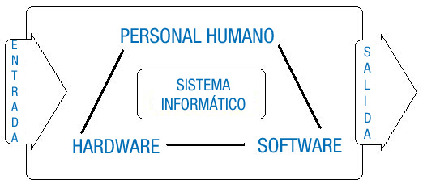

La informática es la ciencia que se encarga de estudiar todo lo relacionado con los sistemas informáticos, incluyendo desde los temas relativos a su arquitectura y su fabricación, hasta los temas referidos a la organización y almacenamiento de la información, sin olvidar los relativos a la creación y uso del software, o a la formación del personal informático. Para ello se basa en múltiples ciencias como las matemáticas, la física, la electrónica, etc.
Para saber más
Para empezar conviene visitar la siguiente dirección en la que hace un repaso a la evolución histórica de la creación de los ordenadores y otras cosas:
Se define sistema informático como un conjunto de elementos físicos (hardware) y de elementos lógicos (software) interconectados entre sí, destinados a gestionar el tratamiento automático y racional de la información, entendiendo por esto, su organización, su transmisión, su procesamiento y/o su almacenamiento.
Se incluye como parte fundamental del sistema informático al conjunto de personas que lo utiliza, ya sean usuarios, administradores, programadores, etc. El elemento humano es un componente imprescindible, ya que los sistemas informáticos son creados, desarrollados y utilizados por humanos para su propio provecho.
Gráfico que representa la estructura de un sistema informático genérico:

En un Sistema Informático se debe distinguir entre hardware y software:
Los sistemas informáticos han evolucionado, desde que en principio todos sus componentes: físicos, lógicos y humanos estaban localizados en un mismo lugar, a estar formados por subsistemas interconectados a través de redes, que pueden llegar a estar a miles de kilómetros entre sí, integrando sistemas complejos de procesamiento de la información. Y estos subsistemas pueden estar compuestos tanto por un superordenador, como por un solo ordenador personal, o por redes locales de ordenadores, o por una combinación de todos ellos.
El sistema informático más simple estará formado por un sólo ordenador y por un usuario que ejecuta los programas instalados en él.
Se define ordenador como una máquina electrónica con algunas partes mecánicas, compuesta por, al menos, una unidad de proceso, y por equipos periféricos, controlada por programas que deben estar almacenados en su memoria central, destinada al tratamiento automático de la información que le es suministrada. Es una máquina de propósito general ya que puede realizar gran variedad de trabajos a gran velocidad y con gran precisión.
Existen muchos tipos de ordenadores, así que pueden ser clasificados en función de diversos criterios.
Debes conocer
En el siguiente documento se amplia información sobre esta clasificación de ordenadores.
Autoevaluación
La informática es la ciencia que:
Maneja las
aplicaciones de procedimientos de datos controlados.
Estudia
el tratamiento automático de la información por medio de sistemas
informáticos.
Estudia el
comportamiento cívico de los usuarios programadores.
Se encarga de
estudiar sólo lo relacionado con los ordenadores.
En la oficina principal de la empresa BK programación, Ada y Antonio, que pronto va a trabajar para ella, están hablando de forma distendida como buenos amigos. El principal motivo de Ada para mantener esta conversación es averiguar el nivel de conocimiento que tiene Antonio acerca de los ordenadores, por ser sus principales herramientas de trabajo.

Antonio le cuenta su experiencia autodidacta en el montaje de ordenadores.
Ada explica a Antonio que, a pesar de la diferencia que pueda haber entre los distintos modelos y marcas de ordenadores que existen en la actualidad, todos siguen una misma estructura arquitectónica en su diseño. Arquitectura que ya fue definida en uno de los primeros ordenadores que fueron construidos a mediados del siglo pasado, el EDVAC. Antonio decide informarse mejor sobre ese tema porque asegura desconocer la composición de dicha arquitectura. Pero sí entiende la relación que existe entre lo que Ada le cuenta y lo que él conoce sobre los componentes de ordenador que se venden en las tiendas de informática.
La arquitectura funcional vigente hoy día en la construcción de ordenadores fue concretada por John Von Neumann a mediados del siglo pasado. Está basada en los siguientes componentes que se interrelacionan entre sí a través del bus del sistema que actúa como canal de comunicación entre ellos:

Puedes ampliar información sobre esta arquitectura y su autor en el siguiente enlace de la Wikipedia.
La Unidad Central de Proceso es el componente que debe tener un ordenador para considerarse como tal. Viene a ser como un cerebro que debe controlar, dirigir y coordinar todas las operaciones que necesite realizar el ordenador. Todo ello lo hace siguiendo las instrucciones que recibe de los programas que esté ejecutando.
Para que la CPU pueda ejecutar un programa es necesario que esté alojado en su memoria central, desde donde va extrayendo en secuencia cada una de sus instrucciones, analizándolas y emitiendo las órdenes necesarias al resto de componentes que deban intervenir para completar su ejecución.
La Unidad Central de Proceso esta integrada en el Procesador Central o microprocesador y acompañada por una pequeña cantidad de registros de Memoria necesarios para su funcionamiento.
Por tanto en el Microprocesador como parte integrante de la Unidad Central de Proceso, deben existir dos unidades:
La memoria central, conocida como RAM (Random Access Memory), es la encargada de almacenar los datos y las instrucciones de los programas que deben ejecutarse, así como toda aquella información que el sistema necesite para su funcionamiento. Está constituida por un grupo de registros capaces de retener información en su interior mientras el ordenador se encuentre encendido. Cuando el ordenador se apaga, se pierde su contenido.
Los sistemas de Entrada/Salida son circuitos electrónicos que permiten el intercambio de información entre la CPU y los periféricos. Las unidades de entrada se utilizan para cargar programas y datos en la memoria principal desde los periféricos de entrada, y las unidades de salida se utilizan para sacar los resultados de los procesos realizados a través de los periféricos de salida.
Los Buses del Sistema son el conjunto de circuitos eléctricos que conectan la CPU con el resto de unidades para comunicarse entre sí. Cada bus es un conjunto de cables o pistas de un circuito integrado, que permiten la transmisión en paralelo de la información entre los diferentes componentes del ordenador.
Hay tres clases distintas de buses:
Veamos el siguiente ejemplo para entender su interacción: cuando la CPU tiene que obtener la información contenida en una posición de memoria, debe indicar su dirección mediante el bus de direcciones, pero también debe mandar una señal de lectura por el bus de control. Para recibir, a continuación, dicha información por el bus de datos.
Señala todas las respuestas correctas respecto a la Unidad de Control.
Ordena las instrucciones de los programas controlando su grado de complejidad.
Ejecuta las instrucciones que recibe desde el teclado.
Ordena al resto de componentes lo que deben hacer según lo van indicando las instrucciones.
Se encarga de ejecutar los programas interpretando y ejecutando sus instrucciones.


Juan y María están saliendo del trabajo para ir a desayunar el viernes por la mañana y mantienen esta conversación:
-Voy retrasado con los informes que me pidió Ada y me voy a tener que pasar todo el fin de semana tecleando la información en el ordenador -comenta Juan.
-Podrías usar un escáner. A mi me resulta mucho mas cómodo digitalizar que escribir a máquina -responde María.
-Tienes razón, así que voy a pedir prestado a Ada el escáner de la empresa para llevarlo a casa y hacerlo allí - añade Juan.
-¡Pues claro hombre! Para eso sirven los periféricos, para facilitarnos la vida -exclama María.
-Tengo que acordarme de coger también el disco duro externo para traerme, el lunes, la información digitalizada - contesta Juan.
-Yo cuando tengo que mandar información desde casa a la empresa, lo hago a través de Internet -dice María.
Los periféricos son dispositivos electrónicos, unidades externas que se conectan al ordenador a través de los buses de entrada/salida, integrándose en el sistema que pasa a controlarlos como parte de sí mismo desde el momento en el que reconoce su conexión. Existen infinidad de periféricos, diferentes por su diseño o por su función; algunos tienen como misión facilitar la entrada de información al ordenador, mientras que otros facilitan su salida, los hay cuya utilidad es el almacenamiento permanente de datos o los que permiten la conexión a otras máquinas para intercambio de información. Pero no todos ellos son imprescindibles, lo más habitual es disponer de teclado, ratón, monitor, impresora, altavoces y conexión a red.
Según su función se pueden clasificar en:
Algunos periféricos necesitan soportes adicionales para representar la información o para almacenarla. En estos casos hay que tener claro que el periférico no almacena información sino que es el medio utilizado para obtener o depositar la información en su soporte. Por ejemplo: El lector de DVD es el periférico que lee la información del disco, que es el soporte donde esta almacenada. O la impresora que necesita el papel como soporte para escribir sobre él.
Señala la respuesta incorrecta respecto a los periféricos:
Existen unidades de entrada/salida.
Existen unidades de almacenamiento externo.
Existen unidades de entrada y unidades de salida.
Existen unidades de compresión de hardware.

Antonio sigue reunido con Ada en su despacho y le está contando que él mismo montó el ordenador que usa en su casa actualmente.
Antonio le cuenta como, después de informarse bien, compró los componentes necesarios en un comercio local, y ayudado por manuales y vídeos localizados en Internet, se puso manos a la obra. Confiesa que al principio la idea de hacerse su propio ordenador le infundía una mezcla entre miedo y respeto. Pero al fin vio que es tan fácil como montar las piezas de un mecano.
También le cuenta que, a partir de entonces, ha ayudado a algunos de sus amigos a actualizar sus ordenadores; añadiendo memoria, discos duros de mayor capacidad, cambiando alguna que otra tarjeta gráfica y cosas así.
-Siempre hay que tener en cuenta las características de los componentes a utilizar para que sean compatibles entre sí y también hay que saber como se encajan y se conectan entre ellos -comenta Ada. -Hay que tener claro, que antes de montar un ordenador, hay que decidir que componentes son los adecuados para ir montados entre sí -continúa explicando Ada.
-Tienes razón porque hay unos componentes que hay que elegir en función de otros. Lo digo porque si elijes un modelo concreto de procesador te obliga a utilizar una placa base que tenga un conector adecuado para él, y ésta a su vez utiliza un tipo concreto de memoria, etc. -concluye Antonio.

La arquitectura de un ordenador define la estructura funcional de cada una de sus partes, pero se hace necesario implementar dicha estructura mediante hardware de fabricación y comercialización actual.

La imagen que normalmente se tiene de un ordenador es la de una carcasa, con un diseño más o menos bonito, a la que están conectados como mínimo un teclado, un ratón y un monitor. El ordenador en sí, está dentro de la carcasa y está constituido por la placa base, el procesador y la memoria. El resto de elementos que contiene son los periféricos que nos permiten comunicarnos con él, como la tarjeta gráfica, la de sonido, o las unidades de almacenamiento como el disco duro o el lector de DVD.
Claro que también podemos pensar en un portátil, pero éste no deja de ser un ordenador con todos sus componentes, de reducido tamaño, integrados en su interior.
Así, en función de las características tecnológicas de los componentes empleados en su construcción (su tamaño, su grado de miniaturización, su capacidad de proceso, su capacidad de almacenamiento, su velocidad de proceso, su velocidad de transmisión, etc.) se van a construir ordenadores personales más o menos potentes: Portátiles, TabletsPC, PDAs, Smartphones, y hasta consolas de juegos. Pero también se fabrican servidores, mainframes y por supuesto, superordenadores.
Vamos a hacer un estudio de los distintos elementos utilizados para el montaje de un ordenador personal de sobremesa de uso general (por ser la arquitectura más accesible), en base a los componentes físicos que se fabrican y se comercializan en la actualidad. Analizando en la medida de lo posible sus características de funcionamiento particulares.
Los distintos componentes deben seguir determinados estándares de fabricación, sobre todo en lo relativo a sus conexiones e interfaces, para permitir su completa integración en el sistema y mantener la compatibilidad de funcionamiento entre ellos.
La base sobre la que se asienta el montaje de un ordenador personal es la placa base o placa madre. A ella se conectan de una u otra forma, a través de los buses de interconexión, todos y cada uno de sus componentes. Las líneas de suministro eléctrico, procedentes de la fuente de alimentación, proporcionan corriente continua para su funcionamiento.
Como la mayoría de estos componentes necesitan de un recipiente a modo de envase que los contenga y los proteja, se han diseñado para ello las cajas de ordenador, también conocidas como carcasas o chasis.

Las cajas de ordenador se fabrican de diversos materiales como acero, aluminio, plástico, metacrilato, etc. o con una combinación de ellos. Deben tener la suficiente resistencia para aguantar tanto el peso de los componentes que se coloquen en su interior, como el calor que generen, y por supuesto la suficiente capacidad como para poder albergarlos con una distribución adecuada.
Estas cajas se fabrican siguiendo unos diseños basados en unos factores de forma estándares cada uno de los cuales tiene definidas sus propias características de tamaño, forma, capacidad, etc. Así que podemos elegir alguno de entre los distintos formatos de caja más habituales en la actualidad:


Puedes ampliar información sobre el factor de forma de las cajas de ordenador en el primer enlace y ver algunos diseños en el catalogo de este vendedor.
Con independencia de su forma o tamaño. De una carcasa se espera que en su interior contenga ciertos compartimentos dedicados a alojar la fuente de alimentación, los discos duros, las unidades ópticas y por supuesto la placa base y las tarjetas de expansión que se le conecten.


En el panel frontal se sitúan los botones de encendido y reinicio y los LED que indican si el ordenador esta encendido o si se está utilizando el disco duro, etc. También las bocas de las unidades extraíbles y algunos conectores externos de uso habitual, como los de USB o de lectores de tarjetas de memoria.

En el panel trasero se pueden ver los conectores que asoman directamente desde la placa base y desde las tarjetas de expansión. Así como la toma de corriente eléctrica y la salida de ventilación de la fuente de alimentación.

También podemos ver, estratégicamente distribuidas por distintas zonas de la caja, rejillas o aberturas por las que debe circular el aire, libremente o con ayuda de ventiladores situados en su interior, cuyo fin es disipar el calor que generan los componentes internos.
La fuente de alimentación es un elemento imprescindible cuya misión es alimentar de corriente continua a todos los componentes que se integran en el interior del ordenador y a los de bajo consumo que se conectan desde el exterior. Para ello debe ser capaz de suministrar una potencia no menor de 350 vatios. Hay que tener en cuenta que una fuente con potencia insuficiente puede causar problemas de mal funcionamiento y hasta dañar el equipo.

La fuente
de alimentación suele venir preinstalada en la caja del ordenador,
aunque no siempre es así, para poder elegir con independencia de la
caja un modelo que se adapte a nuestras necesidades, por ejemplo, que
sea de mayor potencia, que sea más silenciosa, o que tenga luces
decorativas, etc.
La fuente de alimentación es una pequeña caja metálica, con muchas rejillas para ventilarse, de la que salen los cables con los conectores necesarios para alimentar los componentes del interior del ordenador con voltajes de más y menos 12 voltios, más y menos 5 voltios y más 3,3 voltios. (12 voltios para los motores de las unidades de almacenamiento y ventiladores y 5 y 3,3 voltios para el resto de componentes).


Existen las fuentes modulares que permiten el acoplamiento de los cables con los conectores necesarios, pudiendo retirar los cables sobrantes no utilizados para que no molesten dentro de la caja.
Desde la parte trasera de la fuente de alimentación podemos ver el conector para el cable de la conexión a la red eléctrica y la rejilla de ventilación por la que su propio ventilador extrae el aire caliente que ella misma genera.
La parte trasera, adicionalmente puede disponer de otros elementos como:
Señala las respuestas correctas respecto a las cajas de ordenador.
Se fabrican siguiendo unas dimensiones estándares.
En su interior se instalan todos los dispositivos conectados al ordenador.
En su exterior podemos ver las conexiones disponibles para los dispositivos internos.
Deben estar bien ventiladas para evacuar el calor generado por los componentes de su interior.
-Ya he comprobado que mi actual placa base no entra en la caja nueva que me gusta -comenta Antonio.
-Pues si quieres darte el gusto de comprarla, tendrás que buscar también una placa nueva -responde Ada.
-Sí, ya lo he pensado, y lo que voy a hacer es montar un nuevo ordenador desde cero. Así que voy a buscar una placa base con un factor de forma que se adapte a la caja -reflexiona Antonio.
-Las nuevas placas tienen la ventaja de que integran en su chipset componentes como la tarjeta gráfica, el sonido o la tarjeta de red, que antes debían de insertarse en sus slots de expansión -le aclara Ada.
-Esto es bueno porque el espacio en el interior de la caja está más despejado y se refrigera mejor -reconoce Antonio.
-Pero tiene el inconveniente de que si un componente integrado falla, no se puede sustituir por otro nuevo y además puede provocar que falle toda la placa -concluye Ada.
La Placa Base es una tarjeta de circuito impreso a la que se conectan los demás elementos de un ordenador. Contiene una serie de circuitos integrados entre los que se encuentra el chipset, que le sirve como centro de conexión entre el procesador, la memoria RAM, los buses de expansión y otros dispositivos.
Su diseño debe cumplir unos estándares basados en el "factor de forma", que define algunas de sus características físicas, por ejemplo:
Podemos ver sus principales componentes en el siguiente gráfico.

La placa base es un componente fundamental a través del cual se integran e interrelacionan todos y cada uno de los dispositivos del ordenador.

Todos los conectores tienen conexión directa con alguno de los dos componentes del chipset, los llamados puente norte y puente sur, en ingles northbridge y southbridge respectivamente. Se trata de dos circuitos integrados que con el tiempo han ido recogiendo en su diseño funcionalidades de controladores que antes fueron independientes.
Así el puente norte se encarga de controlar funciones como las comunicaciones entre el procesador, la memoria, el sistema gráfico, incluso en algunos modelos suele integrar controladoras de vídeo, sonido y red. El puente sur, por su parte lleva el control del resto de puertos internos y externos de la placa base. Por tanto, el chipset hace que la placa base funcione como un sistema "nervioso", que interconecta todos sus componentes por medio de diversos buses, permitiendo la comunicación entre ellos.
La placa base incluye un chip conocido como BIOS con un software propio o firmware, que le permite realizar funcionalidades básicas, como reconocimiento y auto chequeo de los dispositivos instalados, gestión básica de vídeo y del teclado. Es el software que se encarga de la parte del arranque del equipo que es independiente del sistema operativo.
Documento con una relación detallada de los posibles elementos que puedes encontrar en una placa base.
Para que tengas más información sobre el "factor de forma", aquí encontraras una lista de tamaños estándar de placas base:
Señala las respuestas correctas respecto a las placas base de ordenador.
Recibe de la pila que lleva incorporada toda la corriente eléctrica que necesita para funcionar.
A través de ella le llega la corriente eléctrica a los componentes internos que tenga conectados.
Dispone de circuitos y pistas por las que se comunican los componentes que tenga conectados.
Cualquier placa base es apta para cualquier procesador.
-También necesitarás un nuevo procesador con un disipador y un ventilador -comenta Ada.
-Sí pero aún no me he decidido por ningún modelo en concreto, ni siquiera sé, sí me conviene más uno de AMD o de Intel. Aún tengo que estudiar sus prestaciones -explica Antonio.
-Eso va a depender mucho de lo que pretendas hacer con el ordenador, pero sobre todo del presupuesto del que dispongas -aclara Ada.
Es la parte más importante del ordenador porque es el encargado de controlar al resto de componentes. Se trata de un microchip compuesto de millones de microcomponentes recogidos en una cápsula, normalmente cerámica, de la que salen una serie de patillas o contactos, que hay que acoplar en el zócalo de la placa base.

Existen varios fabricantes de microprocesadores para ordenadores personales, siendo los más importantes AMD e Intel por ser los que más investigan y más productos sacan al mercado.
Para obtener más información sobre los procesadores de estos dos fabricantes.
Hay diversas características que definen un procesador:
Suele haber varios tipos de memoria caché que se organizan por niveles, creando una jerarquía basada en la proximidad al núcleo del procesador, de forma que cuanto mas cerca esté, trabajará a mayor velocidad pero será de menor tamaño. Nos podemos encontrar con:

Siguiendo con las características de los procesadores, vamos a detallar algunas que tienen mucho que ver con el funcionamiento de los procesadores más modernos, independientemente de si estos son utilizados por ordenadores de sobremesa, portátiles o grandes ordenadores.
Una característica de los procesadores actuales es el número de núcleos que se integran en cada encapsulado y que pueden trabajar de forma simultánea. Como se está haciendo difícil, o poco rentable, aumentar la frecuencia de trabajo de los nuevos procesadores para continuar incrementando su rendimiento, los fabricantes han aprovechado el altísimo nivel de integración conseguido en su fabricación y han incluido más de un núcleo en el mismo encapsulado.
En relación con el funcionamiento debemos destacar la arquitectura de 32 bits o 64 bits, que son los tamaños utilizados en la actualidad. Se refiere al número de bits de los registros que componen el procesador. De este tamaño depende la arquitectura del resto del ordenador que tiene que trabajar con el mismo número de bits.
La elección de un procesador condiciona la elección de la placa base, pues debe incluir un chipset acorde que pueda aprovechar todas sus características y un zócalo compatible en el que pueda instalarse. Para ello el número y la disposición de sus contactos debe coincidir en ambos.
Otra característica no menos importante de los procesadores es que durante su funcionamiento producen tanto calor que pueden llegar a quemarse si no se adoptan las medidas para evitarlo. Así que se hace imprescindible el uso de sistemas para disipar ese calor.
Lo habitual es colocar sobre ellos un elemento metálico (de aluminio o cobre), con mucha superficie de contacto con el aire, que absorba el calor del procesador disipándolo en el aire, esto se conoce como disipación pasiva. Como en los procesadores actuales esto no es suficiente, se acoplan ventiladores a los disipadores para que evacuen el calor con mayor rapidez mediante sus flujos de aire, produciendo una disipación activa.
Existen sistemas alternativos como por ejemplo la refrigeración líquida que extrae el calor del procesador y de otros componentes aprovechando su mayor conductividad. Aunque tiene el inconveniente de tener que instalar circuitos cerrados para hacer pasar el líquido por las zonas a refrigerar además de necesitar un radiador externo para que el líquido se desprenda del calor.
Para obtener más información sobre la refrigeración del calor de los procesadores y otros componentes.
Señala las características que corresponden a un procesador.
La velocidad de cálculo o frecuencia en nanómetros.
La frecuencia de reloj que puede llegar a alcanzar un procesador, se mide en hertzios (Hz).
Puede disponer de varios niveles de memoria caché.
La arquitectura de 23 o 46 bytes con que se fabrican.
-En cuanto a la memoria que vas a necesitar, depende mucho de la placa base que elijas. Seguramente utilices memoria DDR2 o DDR3 que son las que se comercializan en la actualidad. Hay algunas placas que tienen zócalos de las dos clases, para poner las de un tipo o las de otro. Cuando insertes las plaquitas con la memoria en su zócalo, ten cuidado de poner la muesca en su lugar apropiado -explica Ada.
-También tendré cuidado de no tocar los contactos con los dedos para que queden completamente limpios -exclama Antonio.
-Además, siempre es conveniente poner una buena cantidad de memoria para que los programas se ejecuten con fluidez -reflexiona Ada.

La memoria de acceso aleatorio RAM (del inglés: Random-Access Memory) es la memoria que necesita el procesador para ejecutar los programas. En ella busca las instrucciones y los datos, y en ella guarda los resultados.
Físicamente, los módulos de memoria RAM son pequeñas tarjetas de circuito impreso a las que se sueldan los chips de memoria, por una o por ambas caras. Llevan en uno de sus cantos una fila de pines o contactos metálicos para insertarlos en los zócalos de memoria de la placa base.
Los módulos que actualmente se encuentran en el mercado son del tipo DDR (Double Data Rate) o doble tasa de transferencia de datos que vienen integradas en tarjetas de memoria Dimms.
Los encontramos en tres versiones, que podemos reconocer por el número de contactos y por la posición en la que tienen la muesca que les impide su colocación de forma incorrecta:
Para obtener más información sobre la memoria de los ordenadores.
De las siguientes respuestas, señala la correcta.
La memoria RAM viene integrada en la placa base para que funcione más rápido.
La memoria RAM hay que añadirla insertándola en los zócalos de la placa base.
La memoria DDR2 puede insertarse en un zócalo para DDR1 pero dándole la vuelta para que coincida la ranura.
La memoria DDR2 Y DDR3 pueden ponerse en los mismos zócalos porque tienen el mismo número de pines.
-Pienso que las prestaciones de las tarjetas gráficas que se integran actualmente en la placa base son suficientes para el uso normal de un ordenador -comenta Ada.
-Sí, pero a mí me gusta utilizar el ordenador para jugar, y hay juegos que necesitan de una tarjeta gráfica potente para que sus imágenes se vean con buena calidad -concluye Antonio.
Una tarjeta de vídeo o tarjeta gráfica, es una tarjeta de expansión adicional, que adapta los datos enviados por el procesador al monitor o a un proyector para que el usuario pueda verlos representados.
La conexión de estos adaptadores o controladores gráficos a la placa base se hace actualmente a través del bus PCI Express x16, ya que necesitan un bus rápido de comunicación. Hay modelos de placas base que integran en su circuitería un controlador gráfico de suficiente calidad como para un uso normal del ordenador, pero que se queda escaso de potencia trabajando para aplicaciones que hagan un uso intensivo de representaciones gráficas, como por ejemplo juegos en 3D.
Para satisfacer las superiores necesidades gráficas de algunos programas, de diseño o de juegos, hay placas que ofrecen la posibilidad de conectar más de una tarjeta de vídeo de modo que ambas trabajen como una sola aumentando considerablemente su potencia.

-La GPU es un procesador dedicado en exclusiva al tratamiento de gráficos, que libera al procesador central de esta tarea. Igualmente necesita de sistemas para la disipación del calor que producen.
-La memoria que incorporan es para uso exclusivo de la propia tarjeta. Se llama memoria de vídeo y suele ser incluso más eficiente que la RAM del ordenador. Cuando la tarjeta gráfica está integrada en la placa base se reserva para su uso particular una parte de la memoria RAM del ordenador.
- El RAMDAC es un conversor de señal digital a analógico. Su función es transformar las señales para que puedan ser reproducidas por monitores analógicos. Este componente desaparecerá cuando todos los monitores sean digitales y reproduzcan directamente la señal digital.

Los sistemas de conexión más habituales entre la tarjeta gráfica y el monitor son:
Para obtener más información sobre las tarjetas de vídeo.
De las siguientes respuestas, señala las que son correctas.
La GPU es el procesador de las tarjetas de vídeo.
Las tarjetas de vídeo integradas en la placa base con conector SVGA no necesitan RAMDAC
Si ya tengo el vídeo integrado en la placa base no puedo añadir una nueva tarjeta de vídeo.
Una misma tarjeta de vídeo puede tener conectores de salida de los tipos SVGA y DVI.
-En cuanto al sonido, no voy a ser tan exigente y me voy a conformar con el que venga integrado en la placa base, o voy a aprovechar la tarjeta de mi actual ordenador, que no es demasiado antigua -dice Antonio.
-Es una buena idea, porque en un futuro puedes añadir una tarjeta de sonido o cambiarla por otra nueva de mejores prestaciones -reconoce Ada.

Una tarjeta de sonido es una tarjeta de expansión que permite la entrada y salida de audio a través de sus conectores. Normalmente se inserta en una ranura PCI, aunque la mayoría de modelos de placa base ya vienen con la tarjeta de sonido integrada. Las tarjetas de sonido incorporan los conectores tipo mini jack que se necesitan para la conexión de los dispositivos de sonido.
Los conectores vienen codificados por colores:
Para el procesamiento del sonido se utilizan los siguientes componentes:
Para obtener más información sobre las tarjetas de sonido.
De las siguientes afirmaciones sobre las tarjetas de sonido, señala las que sean correctas.
Se utilizan para reproducir sonidos que después se envían a los altavoces o a los auriculares.
Pueden ir integradas en la placa base.
Se conectan a la placa base mediante el bus AGP.
Pueden digitalizar el sonido que recoge el micrófono que tenga conectado.
Son todos aquellos periféricos que puede utilizar el usuario para introducir información al ordenador. Para ello será necesario que estén conectados al ordenador de alguna de las formas posibles. La mayoría de las conexiones utilizadas, sobre todo en dispositivos de bajo consumo, reciben la alimentación necesaria a través del propio conector, es el caso del teclado. Pero otros dispositivos cuyo consumo será mayor necesitan tener su propia fuente de alimentación. Por ejemplo algunos escáneres.

Teclado
Es una de las unidades de entrada más habituales y casi imprescindibles que utilizamos para enviar información al ordenador mediante la pulsación de sus teclas. Nos permite escribir textos, números y enviar señales de control. Su modo de funcionamiento incluye que lo tecleado aparezca automáticamente en la pantalla, y así comprobar que se ha tecleado lo correcto.
Se conecta al ordenador por medio de un conector de tipo PS/2 (o mini-din) a su conexión exclusiva, o por medio de un conector USB. También los hay inalámbricos que necesitan dos terminales con emisor y receptor, uno de ellos en el propio teclado y el otro que debe estar conectado al ordenador por medio de conector PS/2 o USB. Además entre los inalámbricos nos encontramos los que utilizan tecnología bluetooth, que pueden aprovechar los emisores ya incorporados en el ordenador.

Ratón
El ratón es un pequeño dispositivo, que al ser desplazado por una superficie plana, mueve sobre la pantalla un cursor que lo representa reflejando sus movimientos.
Dependiendo del modelo, un ratón puede tener dos o más botones, e incluso una o varias ruedas de desplazamiento, que permiten dar diversas órdenes en función del botón pulsado y del número de pulsaciones.
El cursor, que suele tener aspecto de flecha, se utiliza para señalar los objetos gráficos que aparecen en la pantalla.
Para su conexión al ordenador se utiliza su conexión PS/2 exclusiva o una conexión a un USB cualquiera. También como los teclados pueden ser inalámbricos, incluso hay modelos que pueden compartir el mismo transmisor base.

Joystick
El joystick o palanca de mando es un periférico similar al ratón en cuanto que transmite los movimientos que realicemos con él al ordenador. Se utiliza sobre todo en juegos para dirigir el movimiento de personajes o de objetos como aviones, coches, etc. Se suelen conectar al ordenador mediante el puerto USB. En las tarjetas de sonido se incluye un conector especial para ellos.

Escáner
Se utiliza para explorar objetos y obtener su representación digital. El proceso de digitalizar consiste en, tomar información de cada uno de los puntos de la superficie de un objeto, y representarlos con valores binarios para generar un duplicado virtual que pueda procesar el ordenador.
Utiliza un cabe de tipo USB para conectarse al ordenador, en algunos modelos necesita toma de corriente eléctrica para su propia alimentación.
Existen diferentes tipos de escáner: de sobremesa, de rodillo, de mano, de tambor, cenital, etc.
Otras unidades de entrada que permiten introducir información al ordenador son:


La mayoría de los actuales ordenadores portátiles ya llevan incorporada una diminuta cámara web en su propia carcasa. También existen las cámaras fotográficas y de vídeo digitales, que aun trabajando de forma independiente pueden conectarse al ordenador por medio de cables USB o fireware, para descargar en él sus capturas.

Para que tengas una información más completa sobre las unidades de entrada que hemos tratado.
Aunque de uso menos frecuente podemos citar otros periféricos de entrada como:
Cuál es el puerto de conexión habitual para conectar las unidades de entrada actualmente?
El mini-din
El eSerie.
El USB
El paralelo.
Son todos aquellos periféricos mediante los cuales el usuario puede obtener información del ordenador. Junto con los periféricos de entrada son los elementos de comunicación entre el hombre y la máquina. A continuación vamos a ver algunos de los más habituales.
El monitor o pantalla de ordenador es un dispositivo que muestra la interfaz proporcionada por los programas para que interactuemos con ellos. Mediante esta interfaz visual que permite la interacción hombre/máquina podemos hacer que se ejecuten programas al pulsar sobre sus iconos y atender a las peticiones que estos nos hagan, y por supuesto, ver sus resultados. También nos permite ver los datos mientras los introducimos por el teclado o los movimientos del puntero cuando movemos el ratón. Existen varios tipos de monitores según su tecnología:


Como características de los monitores podemos citar:
En cuanto a la conexión de los monitores al ordenador, puede ser de tipo analógico, que era lo común en los monitores de tipo CRT, pero desde que se están imponiendo los monitores digitales, ya no es necesario convertir la señal de salida de las tarjetas de vídeo en analógica y la conexión se puede efectuar directamente en digital.
La conexión de los monitores en analógico se hace mediante conectores del tipo SVGA o RGB, y en digital mediante conectores del tipo DVI de 24+5 o HDMI.
Los altavoces, se utilizan para reproducir sonidos, voces, música, etc., a través de la tarjeta de sonido a la que deben estar conectados. Pueden sustituirse por unos auriculares. También existen altavoces que se conectan por USB, que no requieren tarjeta de sonido porque ellos mismos lo procesan.


Una de las unidades de salida más utilizada junto con los monitores es la impresora.
Una impresora es un periférico de salida que permite plasmar sobre papel información procedente del ordenador. Se puede considerar a la impresora como el periférico más antiguo, incluso más que el teclado o el monitor. Debe ser por eso que existe tanta variedad de impresoras. Tienen su puerto de conexión propio, el puerto paralelo, aunque esta cayendo en desuso en favor del USB o de la conexión a la red, ya sea alámbrica o inalámbrica.
Pueden estar dedicadas a un solo ordenador o compartidas entre varios, y pueden ser dispositivos únicos o multifunción cuando van unidos en la misma carcasa a un escáner o a un fax. Necesitan de un cable o fuente de alimentación eléctrica para abastecerse de energía.

El plóter, también llamado trazador gráfico o lineal. Es un periférico utilizado para imprimir diseños de grandes dimensiones y con gran calidad, muchos modelos permiten el uso de rollos de papel de gran ancho para la impresión de planos, mapas, carteles, patrones a tamaño real, etc.
Una variedad de plóter son las cortadoras industriales, usadas para cortar patrones de confección o para cortar piezas metálicas u otros materiales como el metacrilato. En ellas se sustituye la tinta por un láser de corte.
Los plóteres actuales se conectan a la red y se controlan mediante una interfaz Ethernet, de forma que pueden estar compartidos entre varios ordenadores.
Para que tengas una información más completa sobre las unidades de salida que hemos tratado, sigue los enlaces que te facilitamos a continuación:
Enlace a información mas completa sobre monitores.
Enlace a información mas completa sobre altavoces.
Además podemos citar los convertidores digital-analógico que convierten las señales digitales que proporciona el ordenador en analógicas para el control de ciertos dispositivos. Por ejemplo en domótica permiten subir o bajar persianas, encender o apagar luces, etc. Comentar que la mayoría de los robots industriales son dispositivos de salida que realizan determinadas tareas controladas por programas desde el ordenador al que estén conectados.
De las siguientes afirmaciones sobre las unidades de salida. ¿Cuál es la correcta?
Se llaman unidades de salida porque con ellas el usuario puede obtener la información que el ordenador proporciona.
Tienen la capacidad de convertir la información interna, en binario, a representaciones más comprensibles por el ser humano.
Son aquellas unidades que presentan al usuario la información en formato multimedia. (imágenes, sonido, etc.).
Todas las anteriores son correctas.
-Para conectarme a Internet, necesito tener una tarjeta de red inalámbrica, porque así tengo mayor libertad a la hora de colocar el ordenador en el lugar que quiera -expone Antonio.
-Yo, particularmente, me fío más de las redes cableadas, pienso que son más seguras -contesta Ada.
-Hablando de seguridad, tengo que hacer una copia de mis datos, que voy a guardar en un disco duro externo, para pasarlos luego al nuevo ordenador -exclama Antonio.
-Te has fijado lo que pasa con los discos duros, que por más grandes que te parezcan, acaban llenándose por completo -reflexiona Ada.
-Claro cada vez los hacen de mayor capacidad, y nosotros los aprovechamos, guardamos en ellos cada vez más cosas y de mayor tamaño -reconoce Antonio. - Yo tengo carpetas repletas con las fotos y vídeos de mi cámara digital, también tengo una colección de ficheros con la música de mis grupos favoritos Todo eso acaba ocupando mucho espacio en el disco duro, que al final se llena por completo -continua explicando Antonio.
Son aquellos periféricos que cumplen las dos funciones, la de introducir datos al ordenador y la de extraer datos bien sea para enviarlos a otro ordenador, para guardarlos de forma estable hasta que sean necesitados de nuevo o simplemente para ser mostrados al usuario del ordenador.
Documento con una relación de dispositivos de entrada salida.
Para que tengas una información más completa sobre las unidades de entrada/salida que hemos tratado.
En las unidades de entrada/salida la información se almacena:
En formato analógico, cuando el láser graba sobre los discos ópticos.
En formato analógico, cuando se graba sobre el disco duro.
En formato analógico, durante el proceso de grabación sobre una cinta magnética.
En formato binario en todos los casos.
-Ya tengo todos los componentes en casa y ahora tengo que empezar a componer esa especie de puzzle en tres dimensiones con todos ellos. Hay un montón de conectores, de cables y de piezas que hay que saber como conectar. Voy a ver por Internet si alguien ha montado un ordenador similar a este, así me servirá de guía, y puede que encuentre algún consejo útil -expone Antonio.
-Anímate y ve documentando e incluso filmando los pasos que das durante el montaje y luego lo pones en Internet. Así también podrás ayudar a quien llegue a verlo y lo necesite -responde Ada.
Materiales a utilizar para la instalación.


Hay que aclarar que se utilizan estos componentes de estas marcas igual que se podrían haber utilizado de cualquier otra marca. Sin que haya de por medio ningún interés lucrativo ni comercial.
La elección obedece a que es representativo de lo que se quiere exponer y a la disponibilidad de este material en el momento de crear este texto.

En la misma caja vienen embalados:


Herramientas necesarias o recomendables.
Precauciones y advertencias de seguridad.
Antes de ponernos a trabajar deberemos tener en cuenta las siguientes consideraciones de seguridad:
Para tener una información más completa sobre la seguridad en el trabajo relacionado con el uso de la electricidad.
Documento sobre el montaje de un PC de sobremesa con fotos incluidas.
Señala los elementos o componentes que no son imprescindibles para que el ordenador pueda arrancar.
Memoria RAM.
Disco duro.
Procesador.
Fuente de alimentación.
-Ya he terminado de instalar los componentes dentro de la caja y voy a ver si todo ha ido bien. Ahora voy a conectar todos los dispositivos externos a mi nuevo ordenador, a enchufarlo a la corriente eléctrica, y a ponerlo en marcha -explica Antonio.
-Si el disco duro es nuevo y no tiene instalado ningún sistema operativo, no podrás comprobar que funciona totalmente -exclama Ada.
-Sé que durante el arranque, se hace un auto chequeo, y si todo va bien me dará un error cuando intente localizar el sistema operativo y no lo encuentre. Si algo va mal, ya me saldrá un mensaje de error escrito en la pantalla o se sonaran unos pitidos que indican lo que ocurre -reconoce Antonio.
-Para comprobar si todo esta bien puedes utilizar una versión "LIVE" de algún sistema operativo de uso libre que se cargué desde un lector óptico o desde un dispositivo USB cuando se inicie el ordenador -aclara Ada. -La ventaja de comprar un ordenador completamente montado es que ya ha sido comprobado su funcionamiento e incluso viene con un sistema operativo instalado y listo para usarse -concluye Ada.
El hecho de que lo hayas construido tu mismo o venga montado de fábrica, no tiene que suponer un cambio significativo. Hay que conectar todos los elementos que acompañan y componen el ordenador, como el teclado, el monitor, impresora, etc. enchufarlo a la corriente eléctrica, y ver los posibles fallos en el arranque.
Los que vienen de fábrica han debido pasar ciertos controles de calidad antes de ponerse a la venta, por lo que se supone que han sido probados y deben funcionar correctamente. Solo debemos conectar entre sí los distintos elementos que nos han proporcionado (teclado, ratón, monitor, etc.) verificando su correcta instalación antes de ponerlos en marcha. El fabricante suele aportar un folleto o una guía gráfica que ayuda a identificar los elementos a conectar y sus conexiones. Estos suelen venir con el sistema operativo instalado, de modo que su puesta en marcha debe ser automática.
Si ha sido un montaje propio, no tiene por qué no funcionar, pero es cierto que pueden suceder algunos hechos como no haber instalado correctamente algún elemento dentro del chasis del ordenador; un módulo de memoria mal insertado, un cable que por despiste ha quedado suelto o mal conectado, etc. En ese caso será necesario revisar la instalación para solucionar el error antes de hacer un nuevo intento de arranque.
Aun funcionando todo correctamente, el arranque en este caso no puede ser completo ya que falta la instalación del sistema operativo.
Las ventajas de montarse el propio ordenador son la posibilidad de elegir el tipo, la marca y el modelo de los componentes, y la satisfacción personal de montarlo y ver que funciona.
Documento sobre como conectar los periféricos al PC de sobremesa para ponerlo a trabajar.
Enlace a documento con los pasos de las conexión de los distintos periféricos al ordenador.
Tras conseguir que el equipo se inicie, es posible aplicar distintas utilidades software de chequeo y diagnóstico para comprobar que todo el hardware esta bien instalado y va a funcionar correctamente.
De no tener un sistema operativo instalado en el equipo será preciso iniciarlo desde algún dispositivo externo que lo permita, ya sea disco óptico o unidad USB, que contenga instalada una distribución live de algún sistema operativo o bien aplicar utilidades que estén incluidas en discos de autoarranque.
Podemos hacer uso del conocido HIREN´S BOOT CD, se trata de un CD con el que se inicia el ordenador, sin necesidad de tener instalado un sistema operativo, que presenta un menú de utilidades entre las que se encuentran varios programas de diagnostico, utilidades de particionado de discos duros, analizadores de rendimiento del sistema, herramientas de clonado e imagen de disco, de recuperación de datos, herramientas de MBR, BIOS y muchas otras utilidades con las que dar solución a distintos problemas del ordenador.
Entre la extensa lista de programas incluidos en Hiren's Boot CD se encuentran las (System Information Tools) que son las que nos interesan en estos momentos.
¿Cuáles de las siguientes acciones son necesarias para la correcta instalación y puesta en marcha de un ordenador en su lugar de trabajo?
Situar en su emplazamiento definitivo tanto el ordenador como sus periféricos.
Conectar al ordenador todas las unidades externas que se vayan a utilizar mediante sus conectores correspondientes.
Conectar a la corriente eléctrica tanto el propio ordenador como aquellas unidades externas que lo necesiten.
Todo lo anterior es cierto.
La base de todo ordenador es el Microprocesador, que es su cerebro, es lo que lo define como tal. El resto de componentes que se le conectan no son más que dispositivos mediante los que se alimenta de energía, o que le permiten interactuar con su entorno y en el que nos incluimos sus usuarios.
Vamos a clasificarlos por su tamaño, de mayor a menor, en cinco tipos:

Un Superordenador es un ordenador extraordinariamente rápido con capacidades de proceso, de cálculo, y de almacenamiento, etc. muy superiores tecnológicamente comparado con el resto de ordenadores construidos en la misma época.
Físicamente son de gran tamaño. Deben ser instalados en ambientes controlados para poder disipar el calor producido por sus componentes, lo que no impide que puedan soportar la conexión en línea de miles de usuarios.
Suelen incorporar varios procesadores de gran capacidad de proceso trabajando conjuntamente, en paralelo, destinados a una tarea específica.
El número de procesadores, dependiendo del modelo, varía en un rango que va desde unos 16 procesadores hasta unos 512 procesadores. Por supuesto también cuentan con una generosa cantidad de memoria y con gran capacidad de almacenamiento.
Esto les permite procesar ingentes cantidades de información en poco tiempo, pudiendo llegar a procesar miles de millones de operaciones por segundo. Están diseñados para desarrollar cálculos complicados a gran velocidad.
Por ello son utilizados para realizar simulaciones de procesos muy complejos con una gran cantidad de datos como por ejemplo, el análisis del genoma humano, la simulación de explosiones nucleares, las predicciones meteorológicas o astronómicas, etc.
Pero también son utilizadas para diseñar y probar virtualmente máquinas complejas como automóviles o aviones, y para controlar el funcionamiento de naves espaciales y satélites, entre otras cosas.
Como también tienen un costo excesivo, en comparación con otros ordenadores, se suelen fabricar muy pocos, se suelen fabricar bajo pedido.


Los mainframe son grandes ordenadores, de uso general, que disponen de varios procesadores que pueden trabajar de forma independiente entre sí, pudiendo así ejecutar varias tareas a la vez. Están preparados para realizar varios millones de operaciones por segundo. Su gran capacidad de proceso les permite por un lado, controlar al mismo tiempo a cientos de usuarios, incluso a miles, y por otro controlar el manejo de puertos de entrada salida, dando soporte a cientos de dispositivos de entrada y salida, gracias a lo cual pueden contar con muchas unidades de disco que les permiten almacenar grandes cantidades de información.
Físicamente hoy día un mainframe tiene la apariencia de una fila de archivadores, similares a los de una biblioteca, que se suelen instalar en una habitación, con control de temperatura y con doble suelo, bajo el cual se aloja la inmensa cantidad de cables necesarios para la conexión de los periféricos.
En comparación con un superordenador, un mainframe es mucho más barato y puede ejecutar simultáneamente mayor número de programas, pero los superordenadores pueden ejecutar un solo programa mucho más rápido.
Son utilizados en las empresas de gran tamaño, con muchas sucursales, como bancos, compañías de transportes, etc.

Son la versión reducida, de un mainframe, con menos prestaciones en velocidad, menos memoria, menor capacidad de almacenamiento y menor número de terminales. Están orientadas a tareas específicas. Fueron ideadas para dar servicio a empresas e instituciones, de menor tamaño, que no necesitan toda la capacidad de proceso, ni todos los periféricos de un mainframe.
Un minicomputador es por tanto, un sistema multiproceso y multiusuario que ofrece servicios específicos, que cuenta con capacidad para soportar hasta 200 usuarios conectados simultáneamente y que soporta un número limitado de dispositivos. Siendo, de un relativo pequeño tamaño y pequeño costo, en comparación con un mainframe.
Se suelen utilizar para el almacenamiento de grandes bases de datos, para control automático en la industria y para aplicaciones multiusuario.

Estación de trabajo. Un ordenador de gran potencia para ser usado por un sólo usuario, es parecido a un ordenador personal pero con mejores componentes, que le proporcionan mayor potencia y mayor calidad, y que normalmente se conectan a un ordenador mas grande a través de una red, permitiendo a los usuarios compartir ficheros, aplicaciones y hardware, como por ejemplo las impresoras.
Internamente, las estaciones de trabajo están basadas generalmente en otro tipo de diseño de CPU llamado RISC (procesador de cómputo con un conjunto reducido de instrucciones), con el que las instrucciones se procesan con mayor rapidez.

Las estaciones de trabajo se suelen utilizar para:

Conocido como PC (del ingles personal computer), es un ordenador de propósito general, de pequeño tamaño, con al menos, un microprocesador, que suele disponer de ratón y teclado para introducir datos, de un monitor para mostrar la información, y de algún dispositivo de almacenamiento en el que instalar el sistema operativo y guardar datos y programas. Además admite la conexión de otros periféricos con múltiples y variadas funcionalidades.
Son los ordenadores más accesibles para cualquier tipo de usuario, en cuanto a coste y a facilidad de uso. En sus inicios sólo podían trabajar en modo monousuario, pero que con los avances tecnológicos ahora ya pueden ser utilizados en modo multiusuario e incluso, como servidores de una red de ordenadores.
Los PC's tuvieron su origen gracias a la creación de los microprocesadores por parte de Intel, y a que IBM los incorporó en unos pequeños ordenadores que con el tiempo se estandarizaron, facilitando que otras compañías también pudieran fabricarlos y comercializarlos a precios asequibles al gran publico.
Se conoce como ordenador personal a todos los ordenadores IBM PC y a los modelos similares compatibles, también a los ordenadores Macintosh de APPLE y a los modelos similares posteriores.
La miniaturización ha permitido la creación de otros tipos de PC's. Estos son algunos de ellos:


Según la forma de inserción del procesador, actualmente existen dos tipos de zócalos:


Según el número de contactos y su distribución en el conector tendríamos una clasificación bastante amplia de microprocesadores. La clasificación también depende del fabricante (AMD o Intel) y de sus gamas de modelos.
Veamos a continuación algunos de los zócalos empleados por ambos fabricantes:
| Los zócalos o socket para procesadores AMD | Los zócalos o socket para procesadores Intel |
|---|---|
|
|
Estos conectores son estrechos y alargados, de unos 13,3 centímetros. Tienen unas pestañas en los extremos que sujetan las placas de memoria al ser insertadas, verticalmente, con una ligera presión.


Suelen tener algún resalte que obliga a colocar las placas de memoria con su muesca en la posición correcta.
El número de contactos de cada ranura varía en función del tipo de memoria soportada por el chipset de la placa base que por supuesto debe coincidir con el número de contactos de la placa de memoria.
En la actualidad se usan módulos de memoria tipo DIMM con 3 variantes:

La posición de las muescas varia en cada modelo para hacerlas incompatibles entre si y para evitar confusiones.
El número de zócalos de memoria puede variar en cada modelo de placa, pero suelen agruparse en bancos de 2 o 4 ranuras de memoria. Si una placa contiene dos tipos distintos de ranuras es porque admite la instalación de dos tipos distintos de memorias, aunque no puedan usarse ambos tipos simultáneamente.

Sirven para insertar en ellos tarjetas adaptadoras en las que conectar dispositivos periféricos: como la tarjeta de vídeo para conectar el monitor, o la tarjeta de sonido para conectar los altavoces, etc.
Con la inserción de estas tarjetas se añaden al ordenador controladores adicionales, a los que poder conectar nuevos dispositivos periféricos compatibles cuando sean necesarios.
En las placas actuales podemos encontrar ranuras del tipo PCI y PCI Express de distintas velocidades. Cada una de ellas tiene sus propias características, variando en velocidad de transmisión, en número de conexiones y en tamaño.


Insertar una tarjeta en su ranura correspondiente es tan simple como ejercer una suave presión vertical para lograr que sus conectores se alojen en la ranura de expansión. A continuación, para evitar movimientos indeseados, la tarjeta se sujeta a la caja mediante un tornillo situado en la placa metálica de la tarjeta, que da al exterior de la caja del ordenador y desde la que vemos la nueva conexión externa proporcionada por la tarjeta.
Aquí vamos a agrupar los conectores que se incluyen en las placas base para distintos usos:


Son los conectores que están soldados directamente a la placa base y que asoman al exterior por la parte trasera de la caja del ordenador. Para reconocerlos fácilmente y evitar confusiones de uso están coloreados siguiendo el estándar que los identifica.
El numero de conectores y su disposición varia según el diseño de la placa, aunque se sitúan por una zona bien definida. Por ello, el fabricante de cada placa base adjunta un plaquita metálica para insertar en el chasis del ordenador cuyos huecos se adaptan exactamente a los conectores de la propia placa.
Son los siguientes:


Un componente imprescindible en cualquier placa base es el chip de la BIOS, que puede ir alojado en un zócalo propio o soldado directamente a la placa base.
Su nombre viene de las siglas en inglés de Basic Input/Output System, es un firmware instalado en la placa base que chequea en el arranque todos los dispositivos hardware conectados, y ayuda a cargar el sistema operativo en la memoria del ordenador para que pueda ser ejecutado.


También proporciona una interfaz mediante la cual se pueden modificar algunos de los valores de funcionamiento de la placa base que se registran en la CMOS, una memoria de bajo consumo, que se alimenta permanentemente gracias a la pila de botón. Alguno de estos datos son por ejemplo la fecha y la hora del sistema, el orden de los dispositivos declarados para el arranque, la clave para poder iniciar el sistema, etc.
Todos estos componentes tienen conexión directa con alguno de los dos integrantes del Chipset, los llamados puente norte o puente sur, del ingles northbridge y southbridge respectivamente.
Se trata de dos circuitos integrados que con el tiempo han ido recogiendo en su diseño funcionalidades de controladores que antes fueron independientes.
Así el northbridge se encarga de controlar funciones como, las comunicaciones entre el procesador, la memoria, el sistema gráfico, incluso en algunos modelos suele integrar controladoras de vídeo, sonido y red. Es posible que no podamos ver este chip sobre la placa base ya que se le adhiere un disipador, que le ayuda a dispersar el calor que produce mientras trabaja.
El southbridge, por su parte lleva el control de los puertos internos y externos de la placa base. También puede ir protegido con un disipador.


Por tanto, el chipset hace que la placa base funcione como un sistema nervioso que interconecta todos sus componentes por medio de diversos buses, permitiendo la comunicación entre ellos.

Basándose en lo que hacen con la información que manejan, los vamos a clasificar en dos tipos:
Periféricos de entrada/salida para mostrar y captar información:

Una pantalla, que de por sí, es un dispositivo de salida, se convierte a su vez en dispositivo de entrada si incorpora algún mecanismo que le permite capturar información cuando algún elemento hace contacto sobre su superficie. Como un dispositivo apuntador o un dedo de la mano.
Deben trabajar conjuntamente con algún software que asocie las pulsaciones con órdenes concretas que el ordenador pueda ejecutar.
Para detectar el punto de contacto existen varias tecnologías, estas son algunas de ellas:
Periféricos de entrada/salida para envío y recepción de información:
Se consideran dispositivos de entrada porque reciben datos desde el exterior, desde otro ordenador y se salida cuando envían información a otro ordenador.
El Módem sirve para conectar un ordenador a otro a través de la red de la línea telefónica básica. Los ordenadores han de convertir sus datos binarios en la señal sonora de telefonía. Para ello se convierte cada 1 en una frecuencia y cada 0 en otra. El ordenador receptor debe descodificar esta señal y reconvertirla de nuevo en código binario. De estas conversiones se encarga el modulador-demodulador o módem.
Estos módems han quedado obsoletos en favor de los dispositivos que transmiten utilizando la tecnología ADSL, que proporciona mayores velocidades para el envío y recepción de datos digitales.
La última novedad son los llamados módem de ADSL de tipo USB, Internet móvil, que transmiten con tecnologías de telefonía móvil. Los llaman módems por analogía con aquellos, pero en realidad su funcionamiento es completamente distinto.


Hoy día es usual que cualquier ordenador disponga de tarjeta de red ya se alámbrica o inalámbrica (Wi-Fi), o ambas, simultáneamente. Esto permite a los ordenadores trabajar en red local y conectarse a Internet, usualmente, vía ADSL o vía cable.


Periféricos de entrada/salida para almacenamiento masivo y permanente de la información:
Los dispositivos de almacenamiento son todos aquellos que pueden almacenar la información de forma permanente sin necesidad de electricidad para mantenerla, y se les llama masivos porque pueden almacenar grandes cantidades de información.
Se trata de las llamadas memorias secundarias o unidades de almacenamiento, que se utilizan para guardar datos y programas de forma permanente, ya que no pierden la información cuando les falta su fuente de alimentación eléctrica. Permiten que la información guardada pueda ser leída y utilizada cuando sea necesario, y cuantas veces se requiera.
La información que contienen se graba siempre en formato binario, aunque dependiendo del dispositivo utilizado los datos se almacenan sobre soportes de información de una u otra forma.
Los hay que se bastan a sí mismos para mantener almacenada la información como los discos duros, y los hay que solo leen o graban información sobre soportes de información intercambiables, como los DVDs.
Un soporte de información es cualquier medio físico destinado a registrar información de forma magnética, óptica o mediante cualquier otro método, siempre de forma permanente. Tienen la facultad de ser intercambiables, ya que pueden ser utilizados en cualquier otra unidad compatible, incluso de cualquier otro ordenador. Estos soportes pueden ser CD-ROMs, DVDs, cintas magnéticas, tarjetas de memoria, etc.
Los soportes de la información se clasifican según el modo de acceso a la información en:
Las cintas magnéticas para el almacenamiento de datos vienen usándose desde la segunda generación de ordenadores. Desde entonces han ido evolucionando en su formato y composición, y aumentando su densidad de grabación, paralelamente a como lo han hecho sus unidades lectoras/grabadoras.
Las unidades lectoras deben tener en su interior los mecanismos que permitan mover la cinta por delante de su cabeza de lectura y escritura, para poder registrar o leer en ella la información de forma magnética.
Su principal característica es que se trata de un soporte de acceso secuencial. Esto quiere decir que para obtener un dato cualquiera hay que empezar a leer la cinta desde el principio, pasando previamente por la información anterior.
Su principal ventaja es su gran capacidad, siendo hoy día el medio más económico para hacer copias de seguridad de grandes volúmenes de información, proceso para el cual su forma de acceso secuencial no es una desventaja.


El disco duro, o HD (del inglés Hard Disk) es un dispositivo de almacenamiento que emplea un sistema de grabación magnética para almacenar datos digitales.
Esta compuesto por uno o mas discos rígidos, de aluminio o de material vitrocerámico, que se recubren de una fina capa de material magnetizable, encerrados en una caja sellada, para evitar la entrada de impurezas que puedan perjudicar su funcionamiento.
La información se registra en ellos mediante variaciones en el campo magnético, de forma que un punto puede estar magnetizado en un sentido, para representar un 1, o en otro para representar un 0.
Los discos rígidos, también llamados platos están unidos por un eje a un motor que los hace girar simultáneamente a gran velocidad. Según modelos son comunes velocidades de giro de los discos de 5.400 revoluciones por minuto o de 7.200 revoluciones por minuto.
Entre los platos se colocan unos brazos metálicos en cuyos extremos se sitúan los cabezales, hay un cabezal con dos cabezas para cada cara del disco: una de lectura y otra de escritura que son las que graban y leen la información utilizando para ello pulsos magnéticos.
Mientras los discos giran, los brazos metálicos integrados en un mecanismo llamado peine pueden desplazarse en el sentido perpendicular al eje de los platos. De forma que combinando ambos movimientos, el cabezal de cada plato, que va situado en el extremo del peine, puede llegar a cualquier punto de la superficie del disco, sin llegar a tocarla.
Adicionalmente, los discos también disponen de una parte electrónica o de control, encargada de gestionar tanto el movimiento de los motores para posicionar los cabezales en el lugar adecuado, como la acción de los cabezales para que puedan escribir y leer, y por supuesto para el control de la transferencia de información entre el propio disco duro y la CPU.
La estructura lógica que utilizan los discos duros para almacenar la información se les fija desde fabrica mediante el formateo a bajo nivel, y es la siguiente:

Para la conexión de los discos duros al ordenador existen varias interfaces. Cada una de ellas tiene sus propias características, ya que utilizan distintos tipos de cables y conectores, pero lo más importante es que cada clase de interfaz utiliza un tipo distinto de controlador para gestionar las características del trasvase de información como el modo o la velocidad a que se transmite la información.
Interfaces para conexiones internas, son las utilizadas por los dispositivos que se alojan dentro del ordenador:

Interfaces para conexiones externas son las utilizadas por los discos duros externos que se conectan ocasionalmente al ordenador: A través de USB, de FireWire, de Serial ATA externo (eSATA), de SCSI y SAS externos o mediante conexión de red alámbrica o Wi-Fi.

Es un dispositivo electrónico que utiliza la tecnología óptica, el láser, para leer la información grabada en discos o CDs, que son intercambiables.
Usualmente dispone de una bandeja que sale y entra del dispositivo para alojar el disco que se va a utilizar, aunque hay modelos que sólo disponen de una abertura por la que introducir y expulsar los discos.
Los discos o CDs son rígidos de 8 o 12 centímetros de diámetro, con un orificio central de 15 milímetros de diámetro y un grosor de 1,2 milímetros, que pueden almacenar hasta 214 Mega Bytes y 700 Mega Bytes de información, respectivamente.
Están formados por varias capas de policarbonato que recubren una finísima capa de aluminio reflectante.
Los datos están grabados en una única pista en espiral que se inicia en el centro y se dirige hacia el exterior. Siguiendo dicha pista y bajo la capa reflectante esta grabada la información en binario por medio de microsurcos que representan los unos y los ceros.

Para leer el CD se utiliza un emisor de luz que envía un fino rayo láser hacía la superficie del disco con una determinada amplitud de onda. El reflejo es capturado por un fotoreceptor que cuantifica la cantidad de luz reflejada y determina si dicho reflejo viene de una zona lisa, cuando mantiene la misma amplitud que el rayo original, o viene de una zona de surco, cuando tiene la mitad de la amplitud original.
En contra de lo que se suele pensar las zonas de distinta profundidad, pozos y llanos, no representan ceros y unos. En realidad los valores binarios son detectados cuando se detectan los saltos de una zona a otra. Un salto se interpreta como un 1 binario, mientras que la longitud de un pozo o un llano indica el número consecutivo de ceros binarios.
El lector de discos tiene un motor que hace girar el disco, y otro que mueve el cabezal radialmente. Con la combinación de ambos movimientos el láser tiene acceso a todo el disco.
La unidad lectora tiene dos motores, uno que hace girar el disco y otro que mueve la cabeza lectora radialmente para que pueda avanzar en espiral por toda la pista de datos. El motor que mueve el disco tiene un sistema que ajusta su velocidad de giro, de manera que la velocidad lineal de lectura sea siempre constante, y asegura que la transferencia de datos hacia el sistema también lo sea.
La velocidad de giro es controlada por un microcontrolador que actúa en función de la posición del cabezal de lectura, para permitir un acceso aleatorio a los datos. Para ello cuanto mas cerca del borde este el cabezal de lectura del disco más despacio gira el motor.

Hay unidades grabadoras de CD-ROM que permiten grabar ciertos discos, en realidad son unidades lectoras a las que se les incorpora un nuevo dispositivo láser con una frecuencia distinta, que permite modificar la superficie del disco en forma de pozos y llanos para almacenan así la información en binario.
Los CDs grabables deben tener una capa de material fotosensible que pueda ser modificada por una determinada frecuencia de luz para poder ser grabados. Normalmente no se puede grabar más que una vez sobre el mismo disco, aunque según la tecnología utilizada se permite añadir nuevos datos sobre zonas del disco no utilizadas con anterioridad.
Los CD-RW, regrabables, sí permiten reescribirse varias veces ya que la capa sobre la que se graba es de un compuesto químico que, al enfriarse tras alcanzar una determinada temperatura, cristaliza rápidamente, pero al calentarlo a temperaturas superiores recupera la estructura original sin llegar a cristalizar.
El disco versátil digital (Digital Versatil Disk) tiene una capacidad de almacenamiento y velocidades de transferencia muy superiores a los CDs, llegando a albergar 17 Giga Bytes de información en total. Esto implica que para leer un DVD se necesita que el láser tenga una longitud de onda más pequeña.
El aspecto de un disco DVD es similar al CD, pero puede tener una o dos caras para grabar la información, esto depende del número de capas reflectantes que tenga, cada una con un grosor es de 0,6 milímetros. Además de doblar la superficie de grabación por tener dos caras, los pozos se graban con un tamaño mucho menor, permitiéndose así que la espiral de la pista de datos se estreche y, por tanto, sea mucho más larga. Todo esto implica que pueda almacenar hasta 7 veces más datos que un CD convencional, permitiendo hasta 9,4 GB.
Otro formato de los DVD permite disponer dos pistas concéntricas superpuestas en una misma cara. Cada pista tiene índices de reflexión y transparencia distintas, lo que permite a la lectora acceder a ambas con sólo cambiar el enfoque y la intensidad del láser, permitiendo así tener dos caras de 8,5 GB cada una. Si juntamos en un disco dos caras de dos pistas, llegamos a tener los 17 GB.
Tanto los CDs como los DVDs, para conectarse al ordenador utilizan los mismos interfaces que los discos duros: IDE / SATA / SCSI.


El Blu Ray Disc o BD fue desarrollado para la ejecución de vídeos de altísima calidad aunque también puede ser utilizado para el almacenamiento de una gran cantidad de datos.
Es un nuevo formato de disco óptico, que manteniendo las medidas del CD y del DVD, puede llegar a almacenar 100 GB de información. Cada capa de un disco Blu-ray puede almacenar unos 25 GB de información, y existen discos de hasta cuatro capas.
La mayor densidad de grabación se consigue gracias al uso del rayo láser de color azul, el que le da nombre, que con su longitud de onda de 405 nanómetros, frente a los 650 del láser rojo de los DVD, le permite almacenar más información por unidad de superficie.
Existen diferentes formatos: el BD-R, formato grabable, el BD-RE, formato reescribible, y el BD-ROM.
Para conectarlo al PC se necesita un cable SATA.
En el siguiente gráfico podemos apreciar:
En la parte superior: Las diferencias de profundidad de la capa reflectante desde la superficie de cada disco.
En la parte intermedia: Los distintos láser empleados para la lectura de cada uno de los distintos tipos de discos ópticos.
En la parte inferior: La cantidad total de información que pueden almacenar, y las distintas densidades de grabación conseguidas por los láser en cada uno de los sustratos.


La flash es un tipo de memoria no volátil, es decir, que almacena la información aun sin estar alimentada eléctricamente. Viene encapsulada en pequeñas tarjetas de plástico cuya capacidad y velocidad de almacenamiento depende de los chips de memoria que incorpore.
En un principio fueron inventadas para usarlas como soporte de memoria auxiliar en dispositivos como teléfonos móviles, PDAs, reproductores musicales, cámaras de fotos o vídeos digitales, etc.
Existen distintos formatos debido a que los fabricantes, en función de sus intereses, crearon sus propios diseños definiendo sus formas, su tamaño, el número de conectores, el chip utilizado, etc. con el fin de utilizarlos en los aparatos de su creación. Incluso existen adaptadores con el fin de poder utilizar una misma tarjeta de memoria en dispositivos con distintos formato.
Pero al tratarse de soportes de memoria digital, los ordenadores han incorporado, rápidamente, los lectores adecuados para poder trabajar con ellas y con la información que contienen. Así que hoy día es habitual que los ordenadores, dispongan de ranuras para la inserción de distintas clases de tarjetas de memoria.
Los formatos más habituales son:

Abrimos el lateral izquierdo de la caja del ordenador para tener acceso a su interior.
Retiramos los tornillos que sujetan la chapa y la deslizamos hacia atrás con suavidad para que quede suelta por completo.
Vemos que lleva incorporado una especie de tubo para canalizar la entrada de aire desde el exterior a la zona del procesador.


Como no se va a necesitar hasta el final del montaje, se recomienda retirarla del lugar de trabajo para que no estorbe.
En su interior encontramos los tornillos que necesitaremos mas adelante para fijar los elementos en sus emplazamientos y evitar que puedan moverse.

Hay tornillos de dos tipos:
Hay dos tipos de separadores que sirven para fijar la placa base al chasis de la torre sin que sus superficies se toquen directamente evitando posibles cortocircuitos.
Dentro de la caja veremos los cablecitos que vienen del frontal:


También vemos la fuente de alimentación que ya viene instalada en el interior de la caja con sus cables para alimentar a los componentes internos.
Hay que preparar la caja teniendo en cuenta los elementos que se le van a instalar:

Hay que retirar del frontal las tapas de las bahías en las que se va a alojar la unidad óptica y el lector de tarjetas. Elegiremos emplazamientos que se ajuste al tamaño de cada unidad.
En ambos casos, podemos quitar los embellecedores de plástico que tapan el hueco de las bahías empujándolos desde dentro hasta que salten de su posición. Si es necesario utilizaremos alguna herramienta que nos ayude en estas operaciones como un destornillador o unos alicates.
En la parte posterior de la caja hay que retirar una plaquita metálica para que asome por ese hueco la antena de la tarjeta de red inalámbrica. También deben asomar por su hueco correspondiente los conectores externos de la tarjeta gráfica, y los de la placa base, pero en esta caja esos huecos ya vienen preparados de fabrica.
Nos fijamos en la parte inferior de la zona trasera por la que deben asomar al exterior los conectores de las tarjetas que vamos a utilizar, como hay varias plaquitas y no tenemos claro cuales son las que debemos retirar, aconsejo situar la placa base momentáneamente en el lugar que ocupará. De este modo comprobamos que chapitas son las que quedan emparejadas con los conectores en los que vamos a instalar las tarjetas y las marcamos para retirarlas.


También podemos aprovechar para marcar las posiciones de los agujeros de la caja que coinciden con los de la placa base, ya que serán los que usaremos en su momento para fijarla definitivamente.
Retiramos la placa base y quitamos las plaquitas señaladas con un movimiento de vaivén hasta que se rompan los puntos que las fijan al chasis. Ponemos los tornillos separadores en los agujeros de la caja que habíamos marcado.


Colocamos la chapita para los conectores externos de la placa base en la ventanita que queda libre en la parte posterior de la caja, poniendo especial cuidado en que queden en su posición correcta. Tendremos en cuenta que los conectores del teclado y del ratón, de tipo PS2, son los más cercanos a la fuente de alimentación. Hay que encajarla, en el hueco, desde dentro de la caja presionando poco a poco por todo su perímetro con ayuda de alguna herramienta. Se recomienda colocarla con cuidado para no herirse porque es de un metal muy fino y sus filos pueden cortar con facilidad.


Toca instalar el dvd, el lector de tarjeta y el disco duro:
El dvd se inserta en la bahía de 5,25" desde la parte frontal del chasis, de fuera hacia dentro deslizándolo como si introdujéramos un cajón. ¡Cuidado de no colocarlo boca abajo!.
Sabremos que ha llegado a su posición correcta cuando coincida el frontal de la unidad con el frontal de la torre, además de que el los laterales coincidirán los agujeros de la bahía con los de la unidad. Entonces lo fijaremos con los cuatro tornillos, de los pequeños, para evitar posibles vibraciones durante su uso.


Ahora introducimos el lector de tarjetas en el lugar que le tenemos preparado de igual forma que hicimos con el dvd, y lo fijamos al chasis con los tornillos pequeños.


Los discos duros no necesitan asomar el exterior de la caja y quedan encerrados por completo en su interior. Nuestro disco duro lo vamos a instalar en una de la bahías de 3,5" de las destinadas especialmente para su colocación, procurando dejar espacio entre los componentes adyacentes para facilitarles la evacuación del calor que generan.
La introduciremos dentro de su bahía procurando que los conectores queden accesibles y a la vista, sabremos que ha llegado a su posición correcta cuando en el lateral coincidan los agujeros de fijación, en los que pondremos los tornillos correspondientes, en este caso son 4 de los grandes.


Con esto hemos concluido la parte de preparación de la caja y pasamos ahora a instalar los componentes sobre la placa base que no necesiten ir anclados a la caja, es decir el procesador, su disipador y la memoria.
Empezamos colocando la placa base sobre la mesa para instalarle el microprocesador.
Para poder insertar el micro en la placa, primero debemos quitar la protección de plástico que lleva el zócalo, para ello debemos desbloquearlo. Hay que desencajar y levantar la palanquita dejándola en posición vertical, esto libera el marco metálico en la que esta encajada la protección de plástico. Se gira sobre su eje para ponerlo vertical y se retira la protección con una ligera presión.


Ahora sacamos el micro de su caja y cogiéndolo por los cantos lo colocamos sobre el zócalo haciendo coincidir el triangulo dorado del micro con el triangulo pequeño del zócalo. ¡Cuidado que el micro sólo tiene una posición correcta!. Después hay que fijar el micro al zócalo bajando primero la ventanita metálica y después la palanquita.


Lo siguiente es colocar el disipador sobre el procesador anclándolo de forma segura a su fijación, solo hay que situar el disipador sobre el procesador de forma que los anclajes que tiene en sus esquinas puedan insertarse con una pequeñas presión en los agujeros que la placa base tiene cerca de las esquinas del zócalo del procesador.
Después hay que enchufar el conector del ventilador a su conector correspondiente en la placa base, marcado como CPU-FAN.


Por seguridad hay placas que no arrancan si el ventilador no está conectado evitando así que el procesador pueda quemarse El conjunto disipador ventilador viene incluido en la misma caja que el procesador, así que debe estar estudiado para que juntos trabajen adecuadamente.

El siguiente paso será instalar el módulo de memoria DDR3 en su zócalo correspondiente.
Los zócalos de memoria suelen estar numerados y es recomendable comenzar a instalar los módulos a partir del primer zócalo.
Debemos fijarnos en los pequeños cortes o muescas que tienen los módulos en la parte inferior, para que coincidan con los salientes que hay en los zócalos.
Insertaremos la memoria en el zócalo aplicando una pequeña presión vertical hasta oír un clic que nos indicará que ya esta insertada correctamente.
Si el módulo no entra con facilidad, hay que comprobar de nuevo la situación de las muescas porque si intentamos colocarlos a la fuerza en posición incorrecta, se podría dañar el conector de la placa base o la propia memoria.
En el lateral de los zócalos hay unos anclajes, son unas pestañas blancas que se utilizan para fijar las pacas de memoria al zócalo evitando que se suelten accidentalmente y que ayudan a ajustar los módulos con mayor facilidad a la hora de la inserción. Son las que producen el click cuando se introduce la memoria. También son muy útiles cuando hay que retirar los módulos porque presionándolas hacia el exterior hacen que la memoria salga con facilidad de su alojamiento.
Ahora toca colocar la placa base dentro de la caja del ordenador. La cogeremos con cuidado y la situaremos en su posición. Cuando los conectores externos asomen por los huecos de la plaquita trasera y los agujeros de anclaje coincidan con los agujeros de los separadores le pondremos los tornillos para fijarla a la caja. Se recomienda fijarla con seguridad utilizando todos los tornillos posibles pero sin apretar en exceso para evitar que la placa pueda estropearse.


Una vez instalada la placa base debemos instalar la tarjetas de video y de red WIFI.
Hay que localizar el slot PCI Express que en esta placa base es de color rojo para insertarle la tarjeta de video. Se inserta con cuidado de forma paralela al conector ejerciendo la fuerza necesaria para que se aloje completamente en su lugar. Algunas placas, como esta, tienen una agarradera especial al final del conector PCI Express para fijarla en su parte trasera, evitando cualquier posible movimiento.
Se puede verificar que este bien instalada si no podemos ver los pines de conexión de la tarjeta después de insertarla y los agujeros de sujeción coinciden en la placa y en la caja. Cuando se haya insertado debemos ponerle un tornillo a la plaquita de metal para fijarla al chasis.


La tarjeta de red WIFI hay que insertarla del mismo modo que la tarjeta anterior pero en el slot PCI, el blanco largo. Podemos retirar la antena, momentáneamente si nos estorba para insertar la tarjeta en el slot, sólo hay que desenroscarla manualmente. Después de asegurarse de que los conectores encajan perfectamente dentro del slot, hay que asegurar la tarjeta al chasis mediante un tornillo y enroscar la antena si es que la habíamos retirado.


Por último nos queda colocar los cables necesarios en sus conectores correspondientes. El orden de colocación no influye excepto si algún cable estorba para poner otro.
Empezamos por conectar los cables de estado de la caja. Podemos saber la forma de colocarlos en su posición correcta mirando en el manual de la placa base. Cada fabricante usa una disposición diferente. Cuando los tengamos localizados, simplemente deberemos insertar los cables Power SW (Power Switch, encendido), Reset SW (reinicio), HDD Led (led de disco duro), Power LED (indicación de encendido) y el Speaker (altavoz interno), en los lugares correspondientes. Como los conectores de los indicadores luminosos tienen polaridad, si no funcionan puede ser que estén conectados al revés.

Hay otros cables que van al frontal de la caja, son para sonido y para USB, estos los conectamos respectivamente en el conector lila y amarillo que podemos encontrar en la parte inferior de la placa base. El conector de la lectora de tarjetas que es de tipo USB lo vamos a conectar al conector amarillo de este tipo que nos queda libre.


Conectamos ahora los dos cables de datos SATA de 4 hilos. El primero lo conectamos por un extremo al conector naranja, (situado en la parte inferior de la placa base) de la placa base y por el otro al conector correspondiente del disco duro. El segundo lo conectamos al conector naranja en un extremo y el otro al conector sata correspondiente de la unidad óptica.


Para finalizar, solo queda conectar los cables de corriente que provienen de la fuente de alimentación:
Localizamos el conector mas grande el de 24 contactos, el que alimenta a la placa base y lo insertamos en su conector, es blanco y esta junto a los bancos de memoria.
Después conectamos el auxiliar de la placa base que es de cuatro contactos, también es blanco y esta situado junto al conector VGA de la grafica integrada.


Los últimos cables que vamos a poner son los que proporcionan la energía al disco duro y al dvd. Ha sido necesario poner un adaptador de conector molex a conector sata, ya que la fuente dispone de un único coector para sata, que ya se había conectado en el disco duro.


Al acabar con todas las conexiones es conveniente ordenar los cables en el interior de la caja de forma que no estorben a las aspas de los ventiladores y que dejen fluir libremente el aire, para ello es conveniente ayudarse de alambres de sujeción, o de bridas de plástico.


El montaje finaliza al colocar de nuevo las chapas y cerrar la caja.
Pero la experiencia aconseja que primero se ponga en marcha el equipo y se pruebe que funciona antes de cerrarlo por completo. Y esto es lo que vamos a hacer a continuación.
Posibles Problemas y Pruebas del equipo tras su montaje.
Por si no se consigue montar perfectamente el ordenador a la primera, haremos un repaso de las comprobaciones a realizar para verificar los fallos que se producen con más frecuencia durante el ensamblaje de un ordenador.
Seguiremos el orden de comprobación siguiente, y haremos una nueva prueba de encendido tras haber corregido cualquier fallo detectado:
Las siguientes secuencias de pitidos son los códigos de error más comunes producidos por el POST (Power On Self Test) de una BIOS Award:
Vamos a hacer las conexiones externas que permiten integrar todos nuestros "aparatos" como un sistema informático:
Tomamos como base la caja del ordenador, a la que van conectados el resto de componentes, la vamos a situar en el lugar que le tenemos destinado pero de forma que su parte trasera este accesible para poder acceder a sus conexiones. Igualmente iremos colocando los distintos dispositivos en el lugar que le tengamos destinado para su uso y llevando los conectores de los cables a la trasera de la caja para poder conectarlos.
Empezamos colocando el cable de la fuente de alimentación. Pero aun no lo enchufamos a la red eléctrica.


El conector del teclado que se denomina PS-2, es redondo y suele venir identificado en color violeta. Lo conectaremos sin forzarlo en la parte posterior de la torre, en un zócalo de su mismo color.


El ratón tiene también un conector PS-2, que es de color verde, para no confundirlo con el teclado, también se coloca en la parte trasera, al lado del conector del teclado.


Ahora debemos conectar el cable VGA, que sale de nuestro monitor hacia la tarjeta gráfica, tiene forma trapezoidal pero con las esquinas redondeadas para evitar que pueda conectarse de forma incorrecta. Hay que tener cuidado de no forzar este conector, ya que sus pines son bastante frágiles. Este conector incluye a los lados dos tornillos alargados, que podemos atornillar a la tarjeta con la mano para que no pueda soltarse.


Los altavoces hay que conectarlos a la salida de la tarjeta grafica, al conector de tipo mini-jack de color verde.


Conectamos una cámara web por medio de su cable USB. La cámara lleva incluido su propio micrófono.


Si disponemos de impresora, hemos de buscar su conector de datos para colocarlo en el conector correspondiente de la caja del ordenador. Si la impresora no es muy antigua con seguridad debe ser un conector de tipo USB.


Procedemos de igual modo si disponemos de un escáner; se localiza el cable de datos, de tipo USB, y se conecta a un conector libre de la caja del ordenador.


Hay que conectar un cable del tipo rj45, siempre que nos vayamos a integrar en una red alámbrica. Porque si nos conectamos a una red WIFI, lo haremos por medio de la tarjeta inalámbrica que tenemos conectada.


Por último nos queda enchufar a la red eléctrica los cables de alimentación eléctrica de la caja del ordenador, del monitor, y el de la impresora (este último es opcional, ya que puede estar apagada mientras no sea necesario imprimir).

Ya sólo queda poner en marcha el ordenador y comprobar que funciona correctamente.
Puede que algo se nos haya pasado. Puede que no esté claro o que necesite alguna actualización o añadido. No lo dudes y hazlo saber.